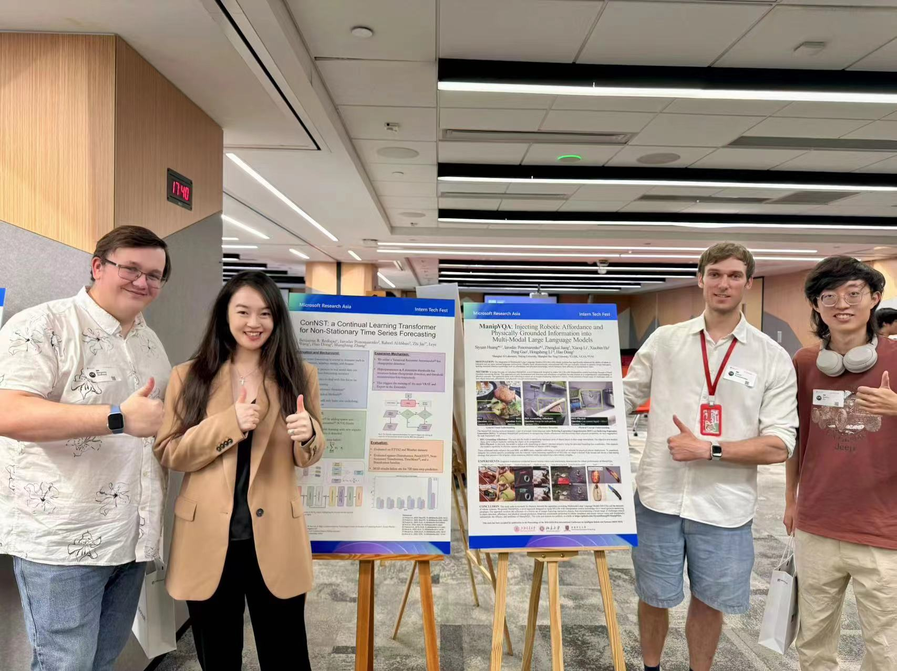

I am a first year PhD student at the EPSRC CDT Machine Learning Systems in the School of Informatics, University of Edinburgh, advised by Prof. Amos Storkey. My research is jointly funded via the EPSRC grant no. EP/Y03516X/1 and the University of Edinburgh.
My research interest is in the field of foundation models for time-series forecasting, specifically with regards to adaptability to domain shift, edge forecasting, and data privacy. I have a particular interest in leveraging continual and federated learning for urban forecasting systems. While my research is primarily grounded in time-series, the methods I explore aim to inform broader seq2seq foundation model research.
Prior to my time at the University of Edinburgh, I conducted my Masters in Science studies in Computer Software and Theory under the supervision of Prof. Zhi Jin at Peking University. During this time, I worked primarily on a heterogeneous mixture-of-experts approach to robust time-series forecasting, which formed the basis of my master’s thesis as well as presenting this as a guest speaker at Microsoft Research Asia. My undergraduate degree is in Mathematics, Operational Research, Statistics, and Economics (MORSE) from Lancaster University.
I am always open to research collaborations and discussions. If you are working in the area of AI for time-series forecasting please feel free to send me an email or message me on LinkedIn.
Email / Institutional Email / CV / CV (Mandarin) / LinkedIn / GitHub
I am broadly interested in designing novel statistical learning algorithms to target large problems in AI for Time Series. My research focuses on algorithms to efficiently learn on small datasets and in non-stationary environments, particularly with regards to long-term time-series forecasting. Here are some of my recent or ongoing projects:
